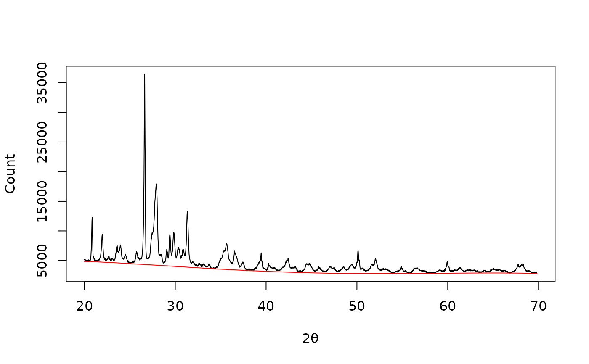

Polynomial Baseline Estimation
Usage
baseline_polynomial(x, y, ...)
# S4 method for numeric,numeric
baseline_polynomial(x, y, d = 3, tolerance = 0.001, stop = 100)
# S4 method for ANY,missing
baseline_polynomial(x, d = 3, tolerance = 0.001, stop = 100)Arguments
- x, y
A
numericvector. Ifyis missing, an attempt is made to interpretxin a suitable way (seegrDevices::xy.coords()).- ...
Currently not used.
- d
An
integergiving the degree of the polynomial. Must be less than the number of unique points.- tolerance
A
numericscalar giving the tolerance of difference between iterations.- stop
An
integergiving the stopping rule (i.e. maximum number of iterations).
Value
Returns a list with two components x and y.
References
Lieber, C. A. and Mahadevan-Jansen, A. (2003). Automated Method for Subtraction of Fluorescence from Biological Raman Spectra. Applied Spectroscopy, 57(11): 1363-67. doi:10.1366/000370203322554518 .
See also
Other baseline estimation methods:
baseline_linear(),
baseline_peakfilling(),
baseline_rubberband(),
baseline_snip()
Examples
## X-ray diffraction
data("XRD")
## Subset from 20 to 70 degrees
XRD <- signal_select(XRD, from = 20, to = 70)
## Plot spectrum
plot(XRD, type = "l", xlab = expression(2*theta), ylab = "Count")
## Polynomial baseline
baseline <- baseline_polynomial(XRD, d = 4, tolerance = 0.02, stop = 1000)
plot(XRD, type = "l", xlab = expression(2*theta), ylab = "Count")
lines(baseline, type = "l", col = "red")
